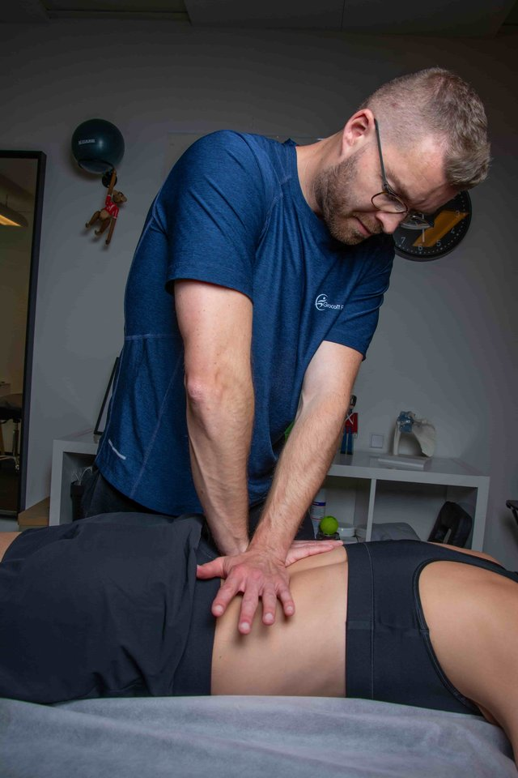

Grocott Fysioterapi — Designsystem
Komponentbibliotek bygget med CSS custom properties. Alle komponenter henter farve, typografi og spacing fra tokens i :root, så ændringer i tokens automatisk propagerer. Tokens stammer fra den originale Figma-designmanual (Prototype-og-Designmanual) — med 4 bevidste WCAG 2.2 AA-fixede afvigelser dokumenteret nedenfor.
Indhold
Designsystemet er organiseret i syv kapitler. Komponent-source er mærket: 🟢 fra Figma-designmanualen, 🟡 fra Figma + udvidet i kode, 🔵 kode-tilføjelse udover Figma.
📋 Spec: docs/superpowers/specs/2026-05-24-design-system-update-design.md
Kapitel A — Foundations 🔵 kode-tilføjelse
Designsystemets fundamenter: farver, typografi, spacing, radius og shadow. Alle 13 grund-tokens matcher Figma-designmanualens Variables 1:1. CSS udvider med 4 WCAG-fixede varianter, 3 ekstra spacing-trin og 4 layout-constraints.
A1 — Farver
Figma Variables (13 tokens) 🟢 fra Figma-designmanualen
--bg-dark#17212E · Mørk surface (hero, footer, CTA-ring)
--bg-light#F8F4EE · Cream — body default + .section--light
--bg-photo#1C0C06 · Foto-overlay (rygsmerter hero)
--white#FFFFFF · .section--white + cards på cream
--accent#E06820 · KUN til knap-fyld + active states
--accent-hover#B84E10 · Knap-hover + tekst-links på lys bg
--text-primary#F4EEE8 · Tekst på mørk bg
--text-secondary#8A9EAD · Sekundær tekst på mørk bg
--text-dark#1C2630 · Primær tekst på cream/hvid
--text-on-accent#1C2630 · Tekst på --accent-fyld
--border-light-figma#E2D8CC · KUN dekorativ på lys bg
--border-dark-figma#2A3A4A · KUN dekorativ på mørk bg
--star#E8960E · KUN stjerne på mørk bg
WCAG 2.2 AA-fixede varianter (4 tokens) 🔵 kode-tilføjelse — bevidste afvigelser fra Figma
Figma's farvepalet er optimeret til æstetik, ikke til WCAG 2.2 AA. Hvor Figma's tokens fejler AA på interaktive elementer, er der defineret WCAG-fixede varianter med dokumenterede kontrastværdier:
--accent-text-on-light#B84E10 · 5.08:1 · tekst/eyebrow på lys bg
(Figma's --accent rammer kun 3.2:1)
--star-on-light#C77B0A · 4.5:1 · stjerne på lys bg
(Figma's --star rammer kun 2.6:1)
--border-light#C5B8A8 · 3:1 · UI-borders på lys bg
(form-felter, filter-chip)
--border-dark#5A6E80 · 3:1 · UI-borders på mørk bg
⚠️ Naming-konflikt: Figma-designmanualen kalder borders border/light / border/dark. CSS har omdøbt dem til --border-light-figma / --border-dark-figma for at frigøre hovednavnet til de WCAG-fixede versioner.
A2 — Typografi
To familier: Sen til overskrifter, Mulish til brødtekst, captions og button-labels. Figma Variables eksponerer 9 navngivne typografi-tokens; CSS implementerer dem som almindelige font-size/font-weight-deklarationer på semantiske elementer.
Overskrifter (Sen)
Den store overskrift — H1
Heading/H1 · Sen ExtraBold · 42px · line-height 1.4
Sektion-overskrift — H2
Heading/H2 · Sen Bold · 34px · line-height 1.4
Under-overskrift — H3
Heading/H3 · Sen Bold · 24px · line-height 1.4
Brødtekst (Mulish)
Body Regular — fysioterapi handler om at finde årsagen, ikke bare symptomet. Standard brødtekst på alle sider.
Body/Regular · Mulish 400 · 18px · line-height 1.8
Body Medium — bruges til lette fremhævelser i brødtekst.
Body/Medium · Mulish 500 · 18px · line-height 1.8
Body Bold — bruges til navne, priser og kontrast-vægt i bløde sætninger.
Body/Bold · Mulish 700 · 18px · line-height 1.8
Captions, eyebrow + button-label
Caption Regular — Fra 400 kr.
Caption/Regular · Mulish 400 · 13px · line-height 1.8
Caption Bold — Google-anmeldelse
Caption/Bold · Mulish 700 · 13px · line-height 1.8
Eyebrow — small caps over H1
.eyebrow · uppercase · letter-spacing 0.05em · farve --accent-text-on-light på lys bg
Button/Label · Mulish 700 · 16px · line-height 1.4
A3 — Spacing + layout
Spacing-skala (8-baseret)
Figma-designmanualen har space/8, space/16, space/24, space/32. CSS udvider med 3 ekstra trin (--space-4, --space-48, --space-64) til at dække alle layout-behov.
--space-44px 🔵
--space-88px 🟢
--space-1616px 🟢
--space-2424px 🟢
--space-3232px 🟢
--space-4848px 🔵
--space-6464px 🔵
Sektion-spacing (semantiske aliaser) 🔵
--section-py = var(--space-64) = 64px — vertikal padding på alle .section
--section-py-tight = var(--space-48) = 48px — bruges på kompakte sektioner (fx find-block)
Layout-constraints 🔵
A4 — Radius + shadow
Radius (2 tokens) 🟢
--radius-card · 8pxCards, form-felter, info-boxes
--radius-btn · 50pxAlle
.btn-varianter (fuldt pill-formet)Shadow (1 token) 🟢
--shadow-card0 6px 16px rgba(28,38,48,0.14)
Bruges på testimonial-cards, modaler, form-card
Kapitel B — Sektion-system 🔵 kode-tilføjelse
Body er --bg-light (cream) som default. Sektioner skifter baggrund via .section--* modifiers. På landing veksler cream/hvid-rytmen bevidst for at gruppere indhold visuelt (Mød + Behandlinger = hvide, resten = cream).
B1 — Sektion-baggrunde (4 base-modifiers)
Hver <section class="section ..."> tager én bg-modifier. Container indeni styrer indholds-bredden uafhængigt af bg.
.section--light · bg --bg-light #F8F4EE · cream — body default
.section--white · bg --white #FFFFFF · brydes ind for at gruppere indhold
.section--dark · bg --bg-dark #17212E · mørk surface (footer, CTA-ring, hero-overlay)
.section--accent · bg --accent #E06820 · orange — sparsom brug, kun til særligt fremhævede CTAs
📐 Sektion-rytme på landing (bevidst Figma-mønster)
- Hero (cream) → Mød din fysioterapeut (hvid) → Anmeldelser (cream) → Behandlinger (hvid) → Pris & forsikring (cream) → CTA Usikker (mørk) → Find vej (cream)
Rytmen er bindende — Louises JS må ikke ændre baggrundsfarver når den injicerer indhold.
B2 — Hero-sektioner (4 varianter)
Hver canonical side har en specifik hero-variant. Klassisk .section--hero bruges på behandlinger-sider med foto-overlay; landing + om-Nicolai har dedikerede varianter.
.section--hero — generisk foto-overlay (behandlinger)
BEHANDLING
Rygsmerter
Jeg finder årsagen, ikke kun symptomet.
Brug: behandlinger/rygsmerter.html, behandlinger/skulder-nakke.html, alle 6 behandlings-sider · Kilde: css/styles.css:1996
.section--hero-landing — 2-kolonne med foto til højre
PERSONLIG FYSIOTERAPI
Få den behandling du fortjener
Ingen autopilot, ingen standardsvar.
[foto]
Brug: index.html · Kilde: css/styles.css:2007 · Grid: 560fr / 570fr (max-width 1280px)
.section--hero-om — om-Nicolai hero
OM NICOLAI
Fysioterapeut med 12 års erfaring
Specialiseret i ryg, skulder og kæbe — med rod i sportsmedicin.
Brug: om-nikolai.html · Kilde: css/styles.css:2091
.section--video-hero — sektion med embedded video-block
Hør mig fortælle
Hvad kan du forvente når du booker første tid?
[ ▶ video-block ]
Brug: om-nikolai.html · Kilde: css/styles.css:2152 · Indeholder altid en .video-block
B3 — CTA-sektioner (2 varianter)
To dedikerede CTA-sektioner med forskellig visuel vægt. .section--cta-ring bruges som "ring-os"-prompt midt på siden; .section--cta-bund bruges som booking-prompt nederst.
.section--cta-ring — mørk bg + orange phone-pill
Brug: index.html:627, om-nikolai.html:360 · Kilde: css/styles.css:2442 · Indeholder altid en .cta-band wrapper og en .btn.btn--phone-accent
.section--cta-bund — cream/accent bg + primary CTA
Brug: alle behandlinger/*.html (sidens bund) · Kilde: css/styles.css:2828 · Container'en bruger .cta-bund-klassen til centering
B4 — Find vej (.section--find)
Dedikeret sektion for klinik-adresse: kort til venstre, info-kolonne til højre. Bruges på index.html bunden + på alle behandlings-sider.
[ kort ]
Brug: index.html:656, behandlinger/*.html (sidens bund) · Kilde: css/styles.css:2558 · Indeholder .find-grid med .find-map + .find-info
Kapitel C — Komponenter
Komponentbibliotek grupperet efter formål. Source-mærkat viser hvad der er fra Figma-designmanualen vs. tilføjet i kode (se TOC for legende).
C1 — Buttons 🟡 Figma + udvidet (4 ekstra varianter i kode)
Figma-designmanualen (section 01) viser Primary + Secondary (light/dark). Live-koden tilføjer Ghost, Outline, Dark, Phone-accent og MitID til at dække alle CTA-kontekster.
Button / Primary 🟢
Button / Secondary (lys surface) 🟢
Button / Secondary (mørk surface) 🟢
Button / Ghost accent 🔵 kode-tilføjelse
Brug: klient/login.html · Kilde: css/styles.css:319+
Button / Outline 🔵 kode-tilføjelse
Brug: pris-grid + find-vej · Kilde: css/styles.css:392
Button / Dark (fyldt mørk på lys bg) 🔵 kode-tilføjelse
Brug: forsikring-card CTA · Kilde: css/styles.css:404
Button / Phone-accent (på mørk surface) 🔵 kode-tilføjelse
Brug: .section--cta-ring CTA-band · Kilde: css/styles.css:425
Button / MitID-login 🔵 kode-tilføjelse
Brug: klient/login.html · Kilde: css/styles.css:441
C2 — Navigation 🟡 Figma section 02 + 11 + 3 open-states
Figma-designmanualen dokumenterer navigation i to hoved-sektioner (Desktop, Mobile) plus tre open-states (Behandlinger-dropdown, Praktisk-dropdown, Mobile-menu).
C2.1 — Desktop nav (1440 bred) 🟢 Figma section 02
Se denne sides header for live-eksempel. Class-struktur:
<header class="nav">
<div class="nav__inner container">
<a class="nav__logo">…</a>
<nav class="nav__links">
<ul>
<li class="nav__item nav__item--dropdown">
<button class="nav__link" aria-expanded="false">
Behandlinger <span class="nav__chevron">▾</span>
</button>
<div class="nav__dropdown">…</div>
</li>
</ul>
</nav>
<div class="nav__ctas">…</div>
<button class="nav__burger" aria-expanded="false">…</button>
</div>
</header>C2.2 — Mobile nav (390 bred) 🟢 Figma section 11 — manglede i v1 af denne side
På mobil (<768px) skiftes desktop-nav ud med en burger-toggleret menu. Default: hidden-attribut sat, så menuen er skjult uden JS-fejl.
<div id="mobile-nav" class="nav__mobile" hidden>
<button class="nav__close" aria-label="Luk menu">✕</button>
<nav aria-label="Mobilmenu">
<ul>
<li>
<button class="nav__mobile-toggle" aria-expanded="false">
Behandlinger ▾
</button>
<ul>…</ul>
</li>
</ul>
</nav>
<a href="booking/trin-1.html" class="btn btn--primary">Book første tid</a>
</div>Brug: alle 21 sider · Kilde: css/styles.css:469+ (mobile media query) · Live: resize browser til <768px og klik burger-knappen
C2.3 — Tre open-states 🟢 Figma dokumenterer disse som separate symboler
- Desktop / Behandlinger dropdown open —
<button class="nav__link" aria-expanded="true">→.nav__dropdownbliver synlig. CSS-fallback via.nav__item--dropdown:hover+:focus-within. - Desktop / Praktisk dropdown open — samme pattern, anden trigger (
id="dd-praktisk"). - Mobile / Menu open —
.nav__mobilefår fjernet sinhidden-attribut +.nav__burgerfåraria-expanded="true".
C2.4 — Tilgængelighed + JS-fallback
- Burger-menuen har en CSS-only
:focus-within-fallback i mobile media query — menuen virker selv uden JS. !importantbruges bevidst som Chromium-workaround ([hidden]overstyres af author-CSS). Må ikke fjernes.- Louises JS toggler
hidden-attribut +aria-expanded(ikke klasser) på alle 3 togglere:.nav__burger,.nav__link[aria-controls],.nav__mobile-toggle.
C3 — Cards 🟡 Figma: 2 cards; kode tilføjer 11 + footer column
13 card-varianter klassificeret efter formål: indhold-cards, review-cards og pris/forsikring/summary-cards. Plus footer column som relateret pattern.
Indhold-cards (8)
Card / Treatment (320 bred) 🟢 Figma section 03
Brug: index.html Behandlinger-scroll · Kilde: css/styles.css:721+
Card / Testimonial (420 bred) 🟢 Figma section 07
"Nicolai forstod mit problem på 5 minutter."
Status: original canonical fra Figma, stadig i CSS, men erstattet på landing af .review-card (se C3 Review-cards)
Approach-card 🔵 kode-tilføjelse
Tid til dig
Du er mere end dine rygsmerter. Vi taler om hverdagen og dine mål.
Brug: om-nikolai.html:137 (3-col grid "Min tilgang") · Kilde: css/styles.css:2181
Quote-card 🔵 kode-tilføjelse
"Jeg ser aldrig isoleret på ryggen. Vi kigger på hele kroppen — din holdning, dine bevægemønstre og din hverdag."
Brug: behandlinger/rygsmerter.html:162 "Min tilgang"-sektion · Kilde: css/styles.css:185
Cross-link-card 🔵 kode-tilføjelse
Brug: behandlinger/*.html "Hænger smerterne sammen med andet?" · Kilde: css/styles.css:2738
Min-tilgang-card 🔵 kode-tilføjelse
Min tilgang
Jeg finder årsagen til dine smerter og laver en plan vi begge tror på.
Brug: booking/trin-1.html:137 intro-card · Kilde: css/styles.css (se grep)
Visit-card (nummereret) 🔵 kode-tilføjelse
Vi taler om din situation
Du fortæller om dine symptomer og din hverdag. Jeg lytter.
Brug: om-nikolai.html:161 "Dit første besøg" 3-col grid · Kilde: css/styles.css (se grep)
Product-info-card 🔵 kode-tilføjelse
Formthotics — indlægssåler tilpasset dig
Jeg laver Formthotics-indlæg i klinikken: de varmes op i dine egne sko og formes mens du har dem på.
[ Foto: Formthotics-indlæg ]
Fra 1.500 kr.
Brug: behandlinger/fod.html:189 "Indlægssåler"-sektion · Kilde: css/styles.css (se grep)
Review-cards (2)
Review-card (standard) 🔵 Caroline JS — render-output fra initReviewsWidget()
"Nicolai forstod mit problem på 5 minutter. Efter 3 behandlinger var smerterne væk."
Genereret af js/main.js:156 fra data/reviews.json · CSS: css/styles.css:919
Review-card / Google (statisk) 🔵 kode-tilføjelse
Allerede efter én behandling mærkede jeg en tydelig forskel.
Posted on Google
Brug: om-nikolai.html:304+ 3-col grid · Kilde: css/styles.css:2315
Pris / forsikring / summary-cards (3)
Pris-card 🔵 kode-tilføjelse
- 30 minutter 400 kr.
- 60 minutter 650 kr.
Brug: index.html:553 pris-grid (se også C5) · Kilde: css/styles.css
Forsikring-card 🔵 kode-tilføjelse
Brug: index.html:571 pris-grid højre kolonne · Kilde: css/styles.css
Summary-card 🔵 kode-tilføjelse
Opsummering
Behandling
60 min konsultation
Dato og tid
Tirsdag 5. maj kl. 10:00
Behandler
Nicolai Grocott
Brug: booking/trin-5.html:131 bekræftelse · Kilde: css/styles.css
Relateret: Footer Column
Footer Column (220 bred, mørk surface) 🟢 Figma section 09
C4 — Badge 🟢 Figma section 06
Outline (kategori)
★ Anbefalet
Relateret pattern: .consult-toggle__pill (booking trin-3) — kompakt pill brugt i .consult-toggle--inline. Vises i Kapitel E.
C5 — Pris 🟡 Figma pris-row + kode pris-grid/--card/--col/--list
Pris-row (canonical) 🟢 Figma section 08
30 min konsultation400 kr.
60 min konsultation650 kr.
90 min konsultation850 kr.
Akuttillæg+300 kr.
Brug: behandlinger/*.html pris-sektion · Kilde: css/styles.css:1386
Pris-grid (2-kol komposition) 🔵 kode-tilføjelse
Combination: .pris-grid → .pris-col + .forsikring-card. .pris-col indeholder .pris-list med .pris-card'er + .pris-note + .pris-cta.
.pris-cta = .btn.btn--outline "Se alle priser →" placeret under .pris-list
.pris-note = small print, fx "* Alle priser er inkl. moms"
Brug: index.html:550 "Pris & forsikring"-sektion · Kilde: css/styles.css (se grep)
C6 — Step + Stepper + Step-list + Timeline 🟡 Figma step + 5-trin stepper; kode tilføjer step-list/timeline
Samlet sektion for alle "fremgangs"-mønstre på sitet.
Step (timeline-element) 🟢 Figma section 10
1
Første besøg
Nicolai lytter til dine symptomer.
Stepper (5 trin) 🟢 Figma Stepper 5 Steps floating
Figma viser 6 active-states (1, 2, 3, 4, 5, Complete). Modifiers: .stepper__step--done, .stepper__step--active, default.
- Intro
- Symptom
- Tid
- Oplysninger
- Bekræft
Step-list (horisontal) 🔵 kode-tilføjelse
- 1
Undersøgelse
Funktionel test og bevægelsesanalyse.
- 2
Behandling
Manuelle teknikker, dry needling.
- 3
Selvhjælp
Hjemmeprogram du faktisk kan følge.
Brug: behandlinger/*.html "Fra første besøg til..."-sektion · Default .step-list er vertikal · Kilde: css/styles.css:1497
Timeline (horisontal scroll) 🔵 kode-tilføjelse
Class-struktur: .timeline-scroll wrapper → .timeline (ul) → .timeline-event med __year + __dot + __desc. Bruges på om-nikolai.html:191 karriere-tidslinje.
C7 — Content-blocks
Genbrugelige indholds-blokke der kan placeres i forskellige sektioner.
Video-block 🔵 kode-tilføjelse
Brug: om-nikolai.html:123, index.html:226 · Kilde: css/styles.css:2627
Map-block 🔵 kode-tilføjelse
Class-struktur: .map-block indeholder en <img> med kort-billede. Bruges inde i .find-map wrapper (se Kapitel B4). Kilde: css/styles.css:2551
CTA-band 🔵 kode-tilføjelse
Container-klasse brugt i .section--cta-ring + .section--cta-bund til at centrere heading + paragraph + phone-pill. Vises live i Kapitel B3 ovenfor.
Accordion 🟢 Figma Accordion + FAQ Accordion floating
Bruger native <details>/<summary> for CSS-only accordion uden JS:
Hvornår skal jeg søge hjælp?
Hvis smerterne har varet mere end 2-3 uger, eller hvis du har udstråling til ben — så er det tid til en undersøgelse.
Hvor mange behandlinger skal jeg bruge?
Typisk 3-6 behandlinger. Vi lægger en plan efter første besøg.
Brug: behandlinger/*.html FAQ-sektion · Kilde: css/styles.css:1220 · CSS-only toggle: .accordion__item[open] .accordion__icon roterer 45°
C8 — Reviews-widget 🔵 Caroline JS (2026-05-22)
Renderes dynamisk fra data/reviews.json af initReviewsWidget() i js/main.js:97+. Container har aria-busy="true" + aria-live="polite". ⚠️ Kun via Live Server — fetch fejler på file://.
Header (rating + meta)
Rigtige klienter. Rigtige resultater.
State 1 — Loading (placeholder)
Henter anmeldelser…
Statisk i HTML; fjernes af JS når data er hentet.
State 2 — Error (fetch failed)
Kunne ikke indlæse anmeldelser lige nu. Se dem på Google
Caroline JS sætter .has-error på grid + indsætter error-template (js/main.js:131-135).
State 3 — Success (1 review-card pr. anmeldelse)
Se Review-card-eksemplet i C3 ovenfor.
Kilde: css/styles.css:898 (header), css/styles.css:3677+ (loading/error states i sektion 25)
C9 — FAB / Phone (Mobile 56×56) 🟢 Figma section 05
FAB er position: fixed + bg --accent — kun synlig <768px i nederste højre hjørne. Figma viser Default + Hover state.
FAB-knappen er aktiv på denne side. Scroll til mobil-view (<768px) for at se den.
04 — Forms 🟢 Figma section 04
⚠️ Bliver Kapitel D i næste commit (4/5) — udvides med radio, switch, symptom-grid, filter-chip, form-card og modal.
Input / Text Field — 4 states
Indtast en gyldig e-mail med @